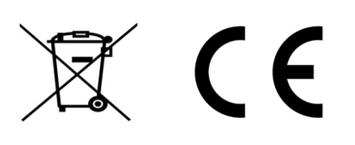

Official documents
General Information of Batteries
This battery does not contain substances of very high concern (SVHC) above 0.1 % w/w as listed on the REACH candidate list.
This battery complies with the applicable restrictions of Annex XVII of Regulation (EC) No 1907/2006 (REACH) and with the substance restrictions of Article 6 of Regulation (EU) 2023/1542.
Waste Battery Management
Waste prevention
Waste prevention starts with correct use and care of the battery. As an end user, you can extend the use phase of the battery and reduce battery waste by following the good practices and recommendations below.
Good practices and recommendations for extending the use phase
- Use the battery only for its intended purpose and only with the equipment, charger and power supply specified by the equipment manufacturer; never use an incompatible or damaged charger.
- Charge the battery in accordance with the manufacturer's instructions. Avoid over-charging and deep discharge, and do not leave the battery connected to the charger after it is fully charged.
- If the battery is not used for a long period, recharge it to approximately 40-60 % of its rated capacity at least once every three months; never store it in a fully discharged state.
- Avoid extreme temperatures, moisture, water and mechanical impact. Do not store or use the battery above 45 degrees C or below -20 degrees C, and do not leave it in a vehicle or in direct sunlight.
- Do not crush, puncture, open, dismantle, modify or short-circuit the battery, and do not bypass the battery management circuit.
- Remove the battery from equipment that will not be used for an extended period, to prevent unnecessary discharge and leakage.
- Keep the battery and its terminals clean and dry, and keep the terminals away from metal objects.
- Replace the battery only with an equivalent battery of the same model and same specification.
- When the battery no longer provides sufficient runtime in its original application, check whether it still holds sufficient capacity for a less demanding application before discarding it.
Possibilities of re-use, preparation for re-use, preparation for repurposing, repurposing and remanufacturing
- Re-use: a battery that is still fully functional may continue to be used in the same application, or in another compatible application.
- Preparation for re-use and preparation for repurposing: a waste battery may be tested, graded by state of health and, where technically suitable, prepared by a qualified operator for a further use.
- Repurposing: a battery that is no longer suitable for its original application may, after a state-of-health assessment, be used in a different application, for example stationary energy storage.
- Remanufacturing: a battery may be rebuilt to its original specification by a qualified operator, using tested cells and components.
These activities may only be carried out by qualified professional operators, after appropriate safety checks and testing, and in accordance with Regulation (EU) 2023/1542. End users must never open, repair or rebuild a battery themselves. An operator that places on the market a battery prepared for re-use, repurposed or remanufactured is considered the manufacturer of that battery and must carry out a new conformity assessment and affix a new label.
Separate collection
End users are obliged to collect waste batteries separately from other waste, in accordance with Article 64 of Regulation (EU) 2023/1542, so that waste batteries can be treated and recycled properly.
What end users must do
- Never dispose of a battery as unsorted municipal waste, and never litter or abandon it in the environment. Batteries must not be placed in household waste bins, in packaging recycling bins or in incinerators.
- Return waste batteries free of charge to a separate collection or take-back point (see section c).
- Where the battery is incorporated in equipment and can be removed without tools, remove it and return the battery and the equipment separately. Where it cannot be removed without tools, return the complete equipment to a take-back point for professional removal.
- Insulate the battery terminals before storage and transport, for example by taping them or by placing each battery in a separate plastic bag, to prevent short circuits.
- Store waste batteries separately in a cool, dry place, out of the reach of children and away from combustible materials, until they are returned.
- Do not accumulate waste batteries at home; return them promptly to a collection point.
Why separate collection matters
Separate collection allows lithium, cobalt, nickel, manganese, copper, aluminium and steel to be recovered and returned to the material cycle, reduces the consumption of primary raw materials and the related environmental impact, and prevents soil and water contamination, fires in collection vehicles and treatment facilities, and risks to the health of waste management workers.
Collection, take-back and treatment
Waste batteries from this product are accepted free of charge through the following separate collection and take-back channels.
Collection and take-back points
- Retail take-back: distributors and retailers that supply batteries take back waste batteries free of charge at their retail premises or in their immediate vicinity, and provide collection boxes for this purpose.
- Take-back on behalf of online platforms: where the battery was purchased through a distance sale channel, the online platform, or the distributor acting on its behalf, provides a free take-back option (Art. 74(4)).
- Municipal collection points and civic amenity sites (recycling centres) operated by or on behalf of the local authority.
- Designated collection points and collection containers for waste portable batteries, including those operated on behalf of producer responsibility organisations and authorised waste management operators.
The collection systems and the exact return channels may differ between Member States. Information on the collection points available in your area is provided by your local authority, by the retailer and by the producer responsibility organisation responsible in the Member State concerned.
What happens to the collected batteries
- Sorting and separation by electrochemical system and, where relevant, by state of health.
- Preparation for re-use and preparation for repurposing: batteries that are still functional and safe are tested and, where suitable, prepared for a further use.
- Treatment and recycling: batteries that cannot be re-used are discharged, dismantled and their hazardous components, in particular the electrolyte, are handled safely; materials such as cobalt, nickel, manganese, copper, aluminium, steel and lithium are recovered.
- Final disposal of non-recoverable residues in accordance with national waste legislation.
Safety instructions for handling
Waste batteries must be handled with care. The following instructions apply to the handling, storage and transport of waste batteries.
General handling
- Do not crush, puncture, open, dismantle, shred or incinerate a waste battery, and never expose it to fire, naked flames, hot surfaces, water or moisture.
- Do not store waste batteries together with metal objects such as coins, keys or tools, and do not mix batteries of different types or chemistries, to prevent short circuits and unwanted reactions.
- Insulate the battery terminals, for example by taping them, and store each battery separately.
- Keep waste batteries out of the reach of children and pets. If a battery is swallowed, seek immediate medical attention and do not induce vomiting.
- Store waste batteries in a cool, dry, well-ventilated place, away from heat sources, direct sunlight and combustible materials, until they are returned to a collection point.
Damaged or leaking batteries
- If a battery shows signs of damage, swelling, deformation, discolouration, leakage (white or crystalline residue), overheating or an unusual smell, stop using it immediately and do not attempt to charge or repair it.
- Wear protective gloves, isolate the battery from other batteries and place it in a non-flammable container with dry sand or vermiculite, or in a separate plastic bag.
- Hand the battery over to a designated collection point as soon as possible and inform the staff that it is damaged.
- If leaked electrolyte comes into contact with the skin or eyes, rinse immediately with plenty of clean water for at least 15 minutes and seek medical advice.
Batteries containing lithium - additional risks
- This battery contains lithium. If a lithium-ion battery is damaged, short-circuited, over-charged, over-discharged or exposed to excessive heat, it may enter thermal runaway. Thermal runaway generates very high temperatures, may lead to fire and explosion, and releases flammable and hazardous gases, including hydrogen fluoride.
- Do not attempt to extinguish a burning lithium battery with water. Evacuate the area, alert the fire service and, only if it is safe to do so, use a Class D fire extinguisher, dry sand or a dedicated lithium battery fire blanket.
- Do not expose a waste lithium battery to water or to temperatures above 60 degrees C, and do not carry it loose in a bag or a pocket.
- After a fire or overheating event, do not handle the residual battery; wait for the fire service or for the staff of the collection point.
Transport
- Transport waste batteries individually packed and protected against short circuits, and identify the package as containing waste batteries.
Labels and symbols
The symbols below are printed on the battery, on its packaging or in the documents accompanying the battery. They are explained here to help end users understand the correct use, handling, return and disposal of the battery.
- Crossed-out wheeled bin - Batteries must not be disposed of as unsorted municipal waste. They must be collected separately and returned to a designated collection or take-back point.
- CE marking - The battery complies with the applicable requirements of Regulation (EU) 2023/1542 and of the other applicable Union harmonisation legislation, including Directive 2014/30/EU (electromagnetic compatibility), Directive 2011/65/EU (restriction of hazardous substances) and Regulation (EU) 2023/988 (general product safety). The CE marking is affixed under the sole responsibility of the manufacturer following the conformity assessment procedure.
- Li-ion chemistry marking - Identifies the electrochemical system of the battery (lithium-ion). This information is needed for correct sorting, safe transport and proper treatment of the battery.
- Rated capacity and rated energy (2000mAh / 7.4Wh) - States the rated capacity and rated energy declared for this battery, and allows end users to compare performance and to select a correct replacement.
- Polarity marking + and - - Indicates the positive and the negative terminal. The battery must always be inserted or connected with the correct polarity; reverse connection may damage the equipment or cause a short circuit.
- Model and batch identification (705048, e.g. 20261113) - Identifies the battery model and the production batch, and allows traceability of the battery throughout its life cycle and during waste treatment.
- Manufacturer identification (EPT, www.ept-battery.com) - Identifies the manufacturer responsible for the battery and provides a contact point for further information.
- Chemical symbols Cd, Pb and Hg - Indicate that the battery contains cadmium, lead or mercury above the applicable concentration limit. Where such a symbol is not printed on the battery, the corresponding substance is not present above that limit. This battery does not contain mercury, cadmium or lead above the limits set out in Annex I of Regulation (EU) 2023/1542.
- Do not dispose of in fire - The battery must not be incinerated or exposed to fire, heat or temperatures above 60 degrees C, as this may cause explosion, fire and the release of hazardous substances.

Environmental and health impact
This battery contains substances which, if released into the environment, may have adverse effects on the environment and on human health.
Substances present and their potential impact
- Cobalt and nickel compounds: classified as carcinogenic and as skin and respiratory sensitisers. Prolonged or repeated contact with dust or with leaked electrolyte may cause allergic reactions, and inhalation of fine dust during uncontrolled dismantling may present a risk to health.
- Manganese compounds: inhalation of manganese dust or fumes over long periods may affect the central nervous system.
- Lithium compounds and the electrolyte, including lithium hexafluorophosphate (LiPF6): the electrolyte is corrosive and irritant. On contact with skin or eyes it may cause chemical burns and serious eye damage; on contact with water or humid air it may release hydrogen fluoride, which is toxic and corrosive.
- 1,3-propanesultone: irritant to skin and eyes, and classified as a suspected carcinogen.
- Critical raw materials (lithium, cobalt, nickel, manganese, natural graphite): loss of these materials through improper disposal represents a loss of scarce resources and increases the environmental impact of primary raw material extraction and refining.
Impact of inappropriate discarding
- Discarding a battery as unsorted municipal waste, littering it or leaving it in the environment may release the substances listed above into soil, groundwater and surface water, with adverse effects on ecosystems.
- A damaged or short-circuited waste battery may overheat and cause fires in collection vehicles, in waste containers and in treatment facilities, endangering workers, the public and the environment, and generating hazardous combustion products.
- Improper disposal endangers the health and safety of waste management workers and deprives the material cycle of recyclable metals, increasing the consumption of primary raw materials and the related CO2 emissions.
- Batteries are an ignition source if stored or transported together with combustible materials, and failures during waste treatment may cause injury and chemical burns.
- Littered batteries are accessible to children and animals; ingestion of a battery may cause severe internal injury and requires immediate medical attention.
Proper use, separate collection and appropriate treatment, as described in sections a to e, prevent these impacts and support the sustainable use of resources, in line with the objectives of Regulation (EU) 2023/1542.
EU Declaration of Conformity
This product has been assessed and is confirmed to comply with Regulation (EU) 2023/1542 on batteries and waste batteries, in particular Article 6 (restrictions on substances), Article 13 (labelling and marking) and Article 74 (information on prevention and management of waste batteries), as well as Directive 2014/30/EU, Directive 2011/65/EU and Regulation (EU) 2023/988.


English is the authoritative language of the documents on this page.